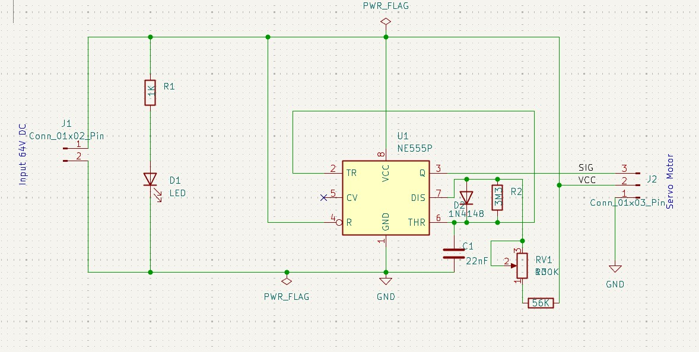
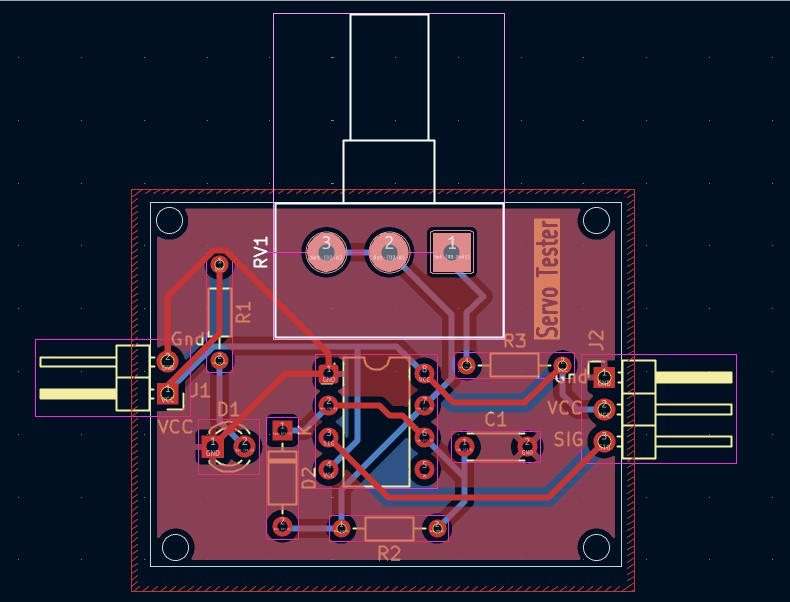
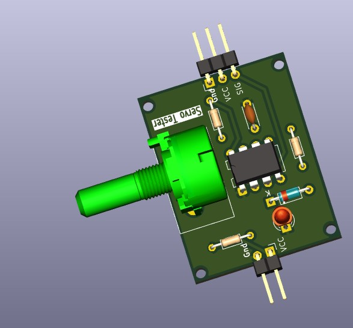
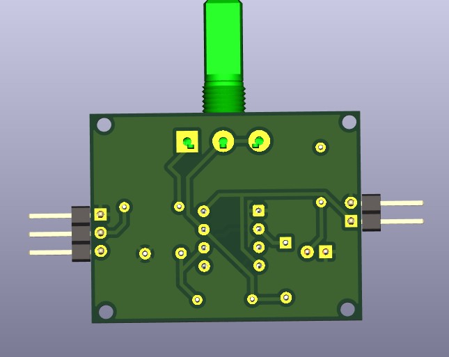

Build, layout and hardware evidence.
The project is presented as a complete PCB workflow, keeping the actual supplied schematic, board and 3D imagery visible rather than reducing the project to a single thumbnail.
Every image supplied for this project is included below. Click an image to inspect it at full size.



